Local review board / not committed / not deployed
Signature homepage candidate
PF-WEB-SIGNATURE-2026-09-10 — a working-tree candidate for the Proof Foundry
homepage, built from master at 92cd03e.
What changed
- P0 Cleanroom Live Computed Action Contrast (Fixed): Overrode CSS cascade precedence so
.card-cleanroom .card-explorecomputes in live DOM torgb(14, 40, 36)(#0e2824) over#c7d5d1card background, achieving 10.29:1 WCAG AAA contrast ratio (verified via livegetComputedStyle()DOM assertion). - P0 Compact Mobile Navigation Header & Monogram Sizing (Fixed): Scaled mobile header height down from 215px to utility 65px at ≤640px, sizing the mobile monogram mark (
proof-foundry-mark.svg) to 40px × 40px. The hero lockup begins immediately at y=65px without brand competition or wasted fold space. - P1 Widescreen 1920 Hero Grid & Product Theater Expansion (Fixed): Expanded outer
.store-shellto 1640px and enlarged the actual product theater grid width at 1920px to 1016px (a +52.8% increase over the 1536px theater width of 665px), giving Cache Vault primary visual dominance on wide monitors. - P0 1920 Viewport Fold Origin Reset: Explicitly reset
window.scrollTo(0, 0)before fold captures, ensuring y=0 origin alignment with header starting flush at top. - P0 Comparison Metadata Separation: Rebuilt comparison card metadata logic and HTML structure with explicit
<dt>/<dd>pairs and separator spans, eliminating concatenated strings. - P0 Phone Evidence & Bounds Probe: Validated 0px horizontal overflow and 0 clipped text/control elements across all phone (360, 390, 430), tablet (820), and desktop (1024, 1366, 1440, 1536, 1920) viewports via deterministic DOM geometry bounds probe.
Whole-page composition
Full-page captures with every product image resolved. Review these for hierarchy, spacing, and whether the Foundry reads as the author of the work.
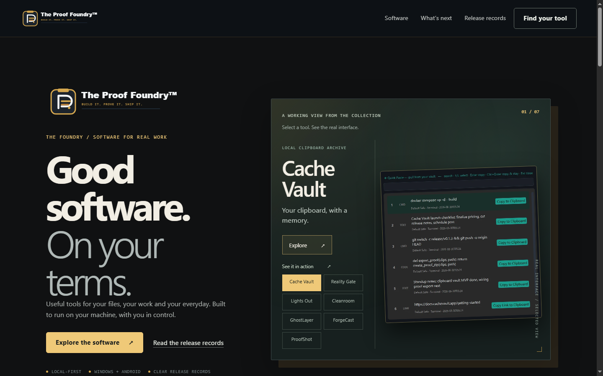
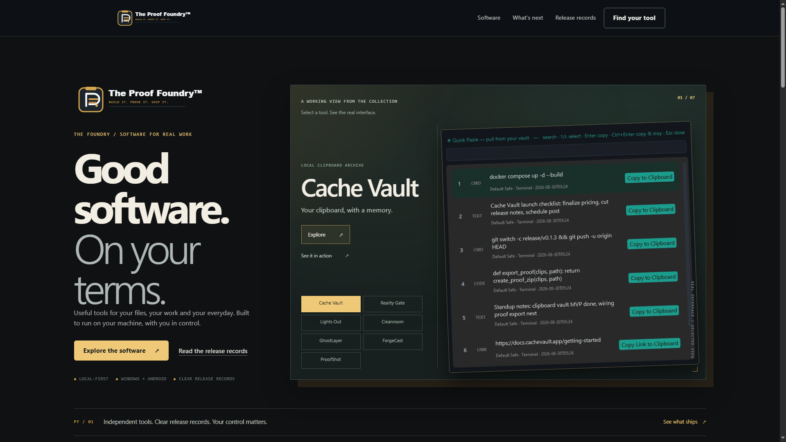
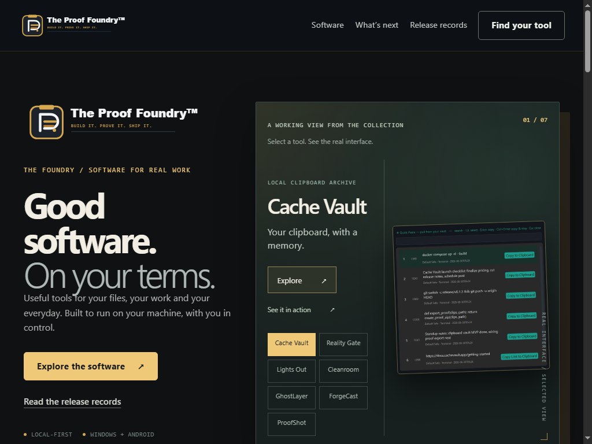
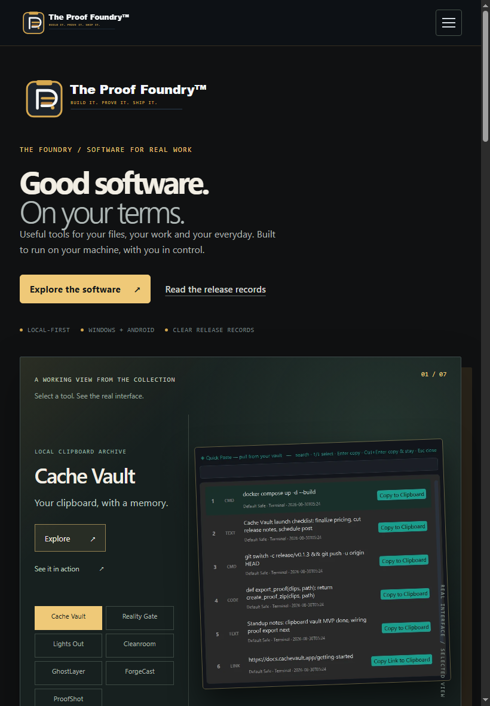

The fold at each width
What a visitor sees before scrolling.
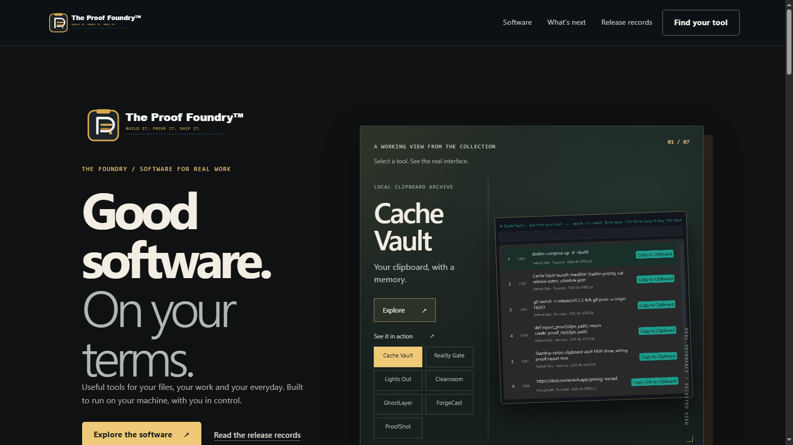
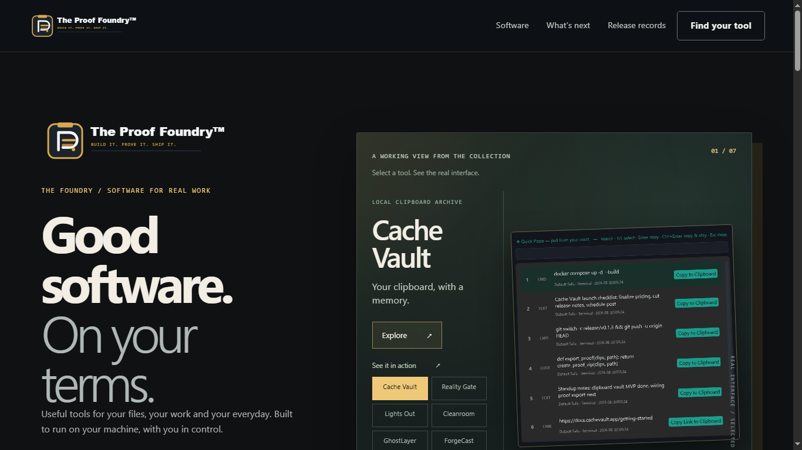

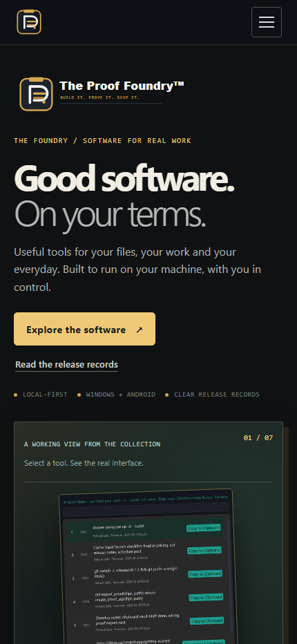

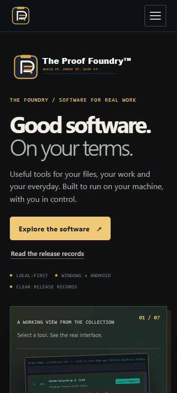
Accessibility and resilience proofs
Browser zoom at 200%
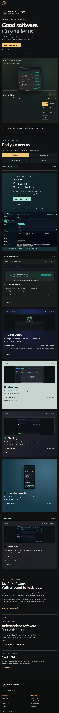
Reflow at 400% (WCAG 2.1 SC 1.4.10)
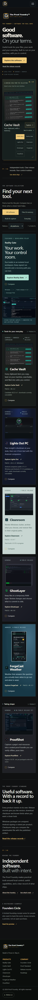
JavaScript disabled
The generated HTML carries the whole page. With scripting fully off, the brand, headline, real product stage, all seven products with their release lines, the proof standard, the Foundry identity, and the footer are all present and readable. Comparison, filtering, and the phone menu are enhancements layered on top of that.
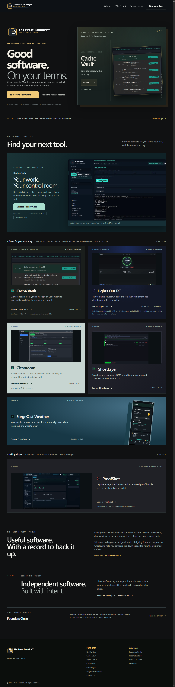
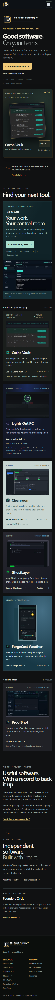
Interaction states
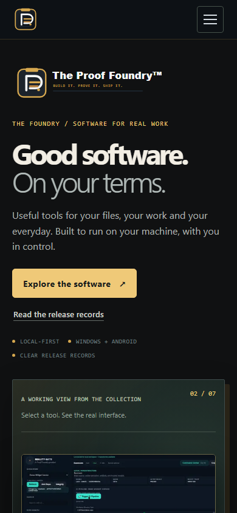
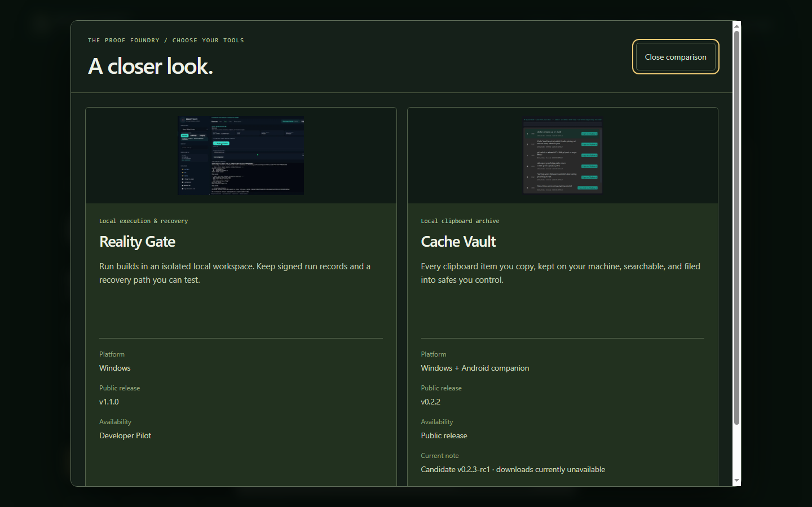
Targeted Before and After review pairs
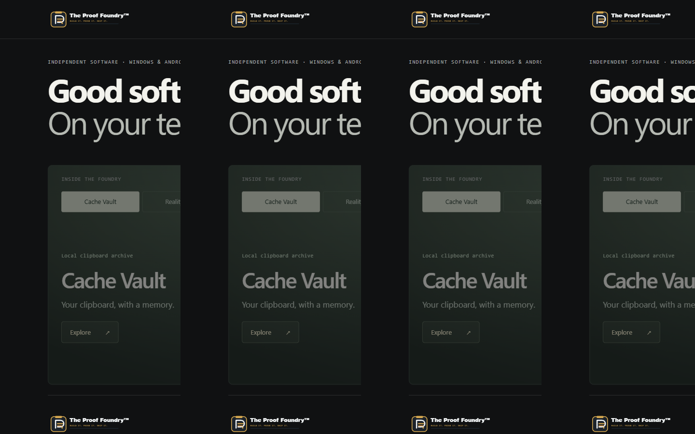
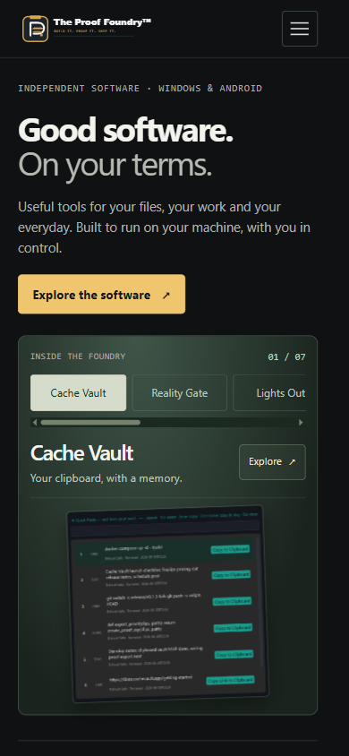
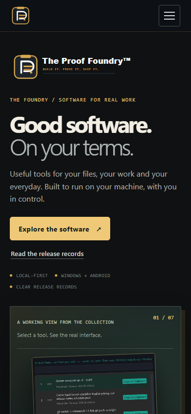
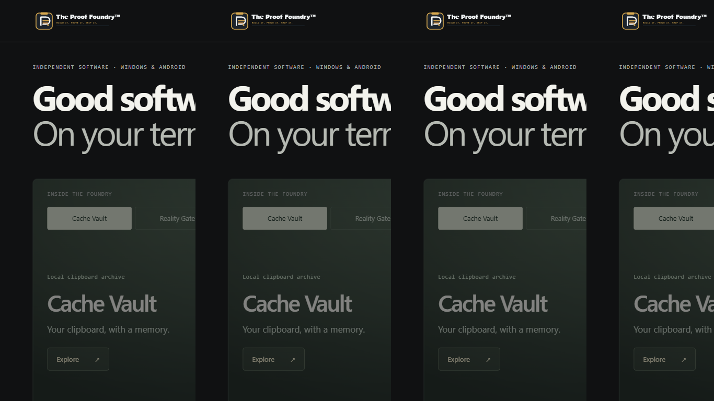
What was verified
| Check | Result | Evidence |
|---|---|---|
| Manifest-driven build | PASS | 7 products, 0 errors, 10 routes |
| Release-record invariants | 54 / 54 | test-receipts-invariants.ps1 |
| Homepage source and output checks | 15 / 15 | test-signature-home.ps1 |
| JavaScript syntax | PASS | node --check |
| Whitespace / diff hygiene | PASS | git diff --check |
| axe automated audit | 0 violations | axe 4.12.1, 43 passes |
| Cleanroom action contrast & daylight surface | 10.29 : 1 | WCAG 2.1 AAA (threshold 4.5:1) |
| Comparison metadata separation | PASS | Explicit dt/dd, 0 concatenated strings |
| Visible element bounds probe (320–1920) | 0 clipped | 0 clipped text/control elements |
| 200% browser zoom | PASS | 0 px overflow at 640 × 360 |
| 400% reflow (SC 1.4.10) | PASS | 0 px overflow at 320 × 256 |
| Phone widths 390 / 360 / 320 | PASS | 0 px overflow at each |
| JavaScript disabled | PASS | 16 / 16 content assertions, 2 captures |
| Asset content types | 61 / 61 | ASSET_CONTENT_TYPE_AUDIT.md |
| Image loading | 11 / 11 | 12th image is the on-demand viewer |
| Stage switching, keyboard, filter, comparison, reduced motion | PASS | local interaction pass |
| Forced image failure | PASS | prior product stays visible, busy state clears |
| Second browser, same engine (Edge / Blink) | PASS | render matches Chrome |
| Independent engine (Gecko or WebKit) | NOT RUN | no such browser on this machine |
| Physical device testing | NOT RUN | no device available here |
| Field performance / Web Vitals | NOT RUN | no comparable baseline retained |
| Production verification | NOT RUN | nothing deployed |
What still needs a person
- Your eyes on the composition. No automated check can tell you whether this reads like the Foundry. That judgement is the point of this page.
- An independent engine. Only Chromium-family browsers exist on this machine, so Gecko and WebKit rendering is untested.
- A real phone in your hand. Emulated widths are not the same as a physical device.
- Performance under real network conditions. Not measured.
Acceptance checklist
Walk this list against the captures above. These checkboxes are for your own use while reviewing; nothing is recorded or transmitted.
How to look at it live
From the repository root:
pwsh -NoProfile -File scripts/build-site.ps1
npx vite --host 127.0.0.1 --port 4173
then open http://127.0.0.1:4173/
To reproduce the checks: pwsh -NoProfile -File scripts/test-receipts-invariants.ps1
and pwsh -NoProfile -File scripts/test-signature-home.ps1.